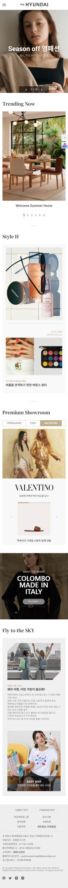

틀에박힌퍼블리셔
윤재영 입니다
A STEREOTYPED PUBLISHER서울벽지
- 서울벽지 리뉴얼Seoul Wallpaper
- TYPE
- FONT
- COLOR
- TOOLS
- INFO
- 풀페이지 반응형 웹사이트
- Pretendard, Roboto, DM Serif Display
- main_colorsub_colorpoint_color
- HTML5, CSS3, JavaScript-jQuery, Fullpage, Photoshop, Slick Slider, Animate
- 풀페이지 스크롤을 이용해 부드러운 분위기를 연출하고 슬라이드와 탭메뉴를 연결해 다양한 벽지의 종류와 색감을 효과적으로 보여줄수있게 레이아웃을 구성했습니다.
더현대닷컴

- 더현대닷컴 리뉴얼The Hyundai
- TYPE
- FONT
- COLOR
- TOOLS
- INFO
- 반응형 웹사이트
- Noto Sans KR, Roboto, DM Serif Text, Chakra Petch
- main_colorsub_colorpoint_color
- HTML5, CSS3, JavaScript-jQuery, Photoshop, Slick Slider, Animate
- flex를 이용해 패션 메거진 느낌을 주고..
계명문화대학교

- 계명문화대학교 리뉴얼kmcu
- TYPE
- FONT
- COLOR
- TOOLS
- INFO
- 반응형 웹사이트
- Pretendard, Roboto, Chakra Petch
- main_colorsub_colorpoint_color
- HTML5, CSS3, JavaScript-jQuery, Photoshop, Slick Slider, Animate
- 화면 상단은 학생들이 많이 사용하는 퀵 메뉴, 공지사항, 팝업창을 배치해 많은 정보를 빠르게 전달할 수 있도록하고, 하단엔 이미지와 hover효과를 이용해 시선이 머물도록 레이아웃을 제작하였습니다.
초록우산어린이재단
정식품


- 정식품 리뉴얼Vegemil
- TYPE
- FONT
- COLOR
- TOOLS
- INFO
- 반응형 웹사이트
- Noto Sans KR, Roboto
- main_colorsub_colorpoint_color
- HTML5, CSS3, JavaScript-jQuery, Photoshop, Slick Slider
- 아놔 얘도 x아이콘들었네..ㅜㅠㅠ